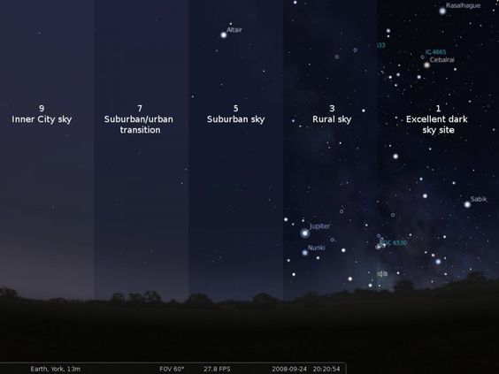
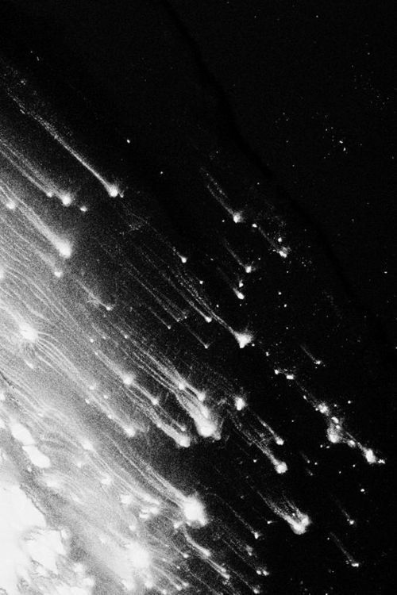

Feel the stars disappear
Light pollution cuts off mankind's ancient connection to the stars
The human eye can detect around 5,000 stars in the night sky.
But the light from skyscrapers, streetlights and houses obscures
all but a handful of the brightest stars. Light pollution is cutting
off our connection to one of nature's greatest wonders, harming
wildlife and hindering research that might help combat climate change.
Stars are more than just beautiful shimmering lights in the night sky.
They have shaped the mythology of every human civilisation. They guide
birds on their amazing migratory journeys. Now we need to do our part to prevent
light pollution so that the stars can be part of our future.
What is light pollution
The term “light pollution” has been in use for a number of
years, but in most circumstances refers to the degradation of
human views of the night sky.
We want to clarify that this is “astronomical light pollution”,
where stars and other celestial bodies are washed out by light
that is either directed or reflected upward. This is a
broad-scale phenomenon, with hundreds of thousands of light
sources cumulatively contributing to increased nighttime illumination
of the sky; the light reflected back from the sky is called “sky glow”.
We describe artificial light that alters the natural patterns of light and dark
in ecosystems as “ecological light pollution”.
Verheijen(1985) proposed the term “photopollution” to mean
“artificial light having adverse effects on wildlife”. Because
photopollution literally means “light pollution” and because
light pollution is so widely understood today to describe the
degradation of the view of the night sky and the human experience
of the night, we believe that a more descriptive term is now
necessary. Ecological light pollution includes direct glare,
chronically increased illumination, and temporary, unexpected
fluctuations in lighting. Sources of ecological light pollution
include sky glow, lighted buildings and towers, streetlights,
fishing boats, security lights, lights on vehicles, flares on
offshore oil platforms, and even lights on undersea research
vessels, all of which can disrupt ecosystems to varying degrees.
The phenomenon therefore involves potential effects across a range
of spatial and temporal scales.
- 

- 
Heads up
However, there is no reason to despair. We create light pollution;
we can fix it.
Around the world, the Dark Skies Association is working to educate
the public about the dangers of light pollution, lobbying for
legislation to protect dark sky reserves and encouraging people to
reconnect with the dark, starlit sky.The fight against light
pollution starts at home. If you need to keep exterior lights on
for safety, use shielded lights that glow downwards only. Use bulbs
that don't emit purple and blue light, as this is harmful to wildlife.
Smart lighting controls also help reduce the impact of your home on
wildlife and make it easier for you to observe the night sky.
You will also find interactive maps showing the level of sky pollution
in your area. These maps are created from data collected by satellites
and citizen scientists involved in the annual stellar count. You can
also help darken our skies. In the UK, the Annual Star Count 2023 will
take place from 17 to 24 February. And, no matter where you are, you
can take part in the year-long Global Night Star Count at any time.
The task is simple: go out on a clear night, count how many stars you
can see in a famous constellation (such as Orion) and report back.
To beat light pollution, we need to know how bad it is and what
impact national policies and local interventions (such as replacing
street lights in towns and cities) will have. In the UK, for example,
star counts suggest that light pollution could peak and start to
decline by 2020. Perhaps the most important aspect of star counts
is that they illuminate our disappearing night skies and inspire us
to take action. Ultimately, it is up to each of us to reduce our
impact on the sky by changing the way we light up our houses and
communities, and by lobbying our representatives to pass dark skies
legislation.